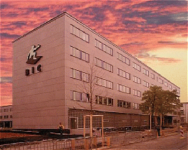

| rund um's BIC |
Die Voraussetzung für den entscheidenden Vorsprung.
|
| Im Rahmen der Aktion „Leipzig - Stadt der Unternehmenden“ entsteht ein virtuelles Haus für Unternehmer, welches alle Aktivitäten zur Unterstützung von Unternehmen umfaßt. |
| Ein
wichtiger Bestandteil dieses Hauses ist das Innovations- und
Transferzentrum BIC im traditionellen Industriestadtteil Plagwitz. Es bildet in Leipzig und Umgebung die zentrale Anlaufstelle für Menschen mit innovativen Ideen, da es bisher dezentral angebotene Leistungen bündelt. Innovationen, also auf dem Markt umsetzbare Ideen für Produkte, Technologien oder Dienstleistungen, dienen als Grundlage für den Aufbau eines leistungsfähigen Mittelstandes und tragen somit zur Stärkung der Wirtschaftsregion Leipzig bei. Ziel des BIC Leipzig ist es deshalb, ein innovatives Umfeld zu schaffen, das langfristig den Standort national und international zu einem Zentrum für die Umsetzung innovativer Ideen werden läßt. |
 |
Zur
Erreichung dieses Zieles stellt sich das BIC Leipzig die Aufgabe, durch
ein umfangreiches und aufeinander abgestimmtes Angebot an Infrastruktur
sowie an Service-, Beratungs- und Finanzierungsdienstleistungen in
einem ansprechenden Umfeld Unternehmensgründer und junge
innovative Unternehmen zu motivieren und zu unterstützen.
Durch
diese konzentrierte Ausrichtung sollen zwischen diesen Unternehmen
Synergien realisiert. Unter bestimmten Bedingungen erhalten auch
innovative Unternehmen anderer Branchen die Möglichkeit, sich ins
BIC einzumieten. Gern würden wir Ihnen auch das Business & Innovation Centre Leipzig in einem persönlichen Gespräch vorstellen. Dabei können wir gemeinsam analysieren, welche konkreten Vorteile sich für Ihr Unternehmen ergeben. Für weiterreichende Informationen stehen wir Ihnen gerne zur Verfügung .
BIC
Leipzig GmbH Telefax: 0341/4912-444 email: info@bic-leipzig. |